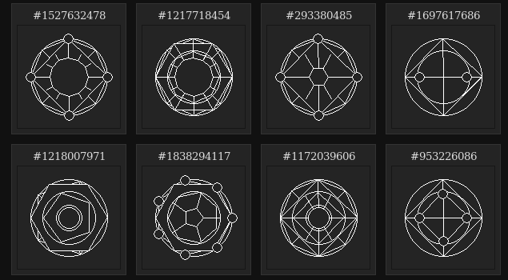

Is programming an art?
Welcome to Laitues (Lettuce) ! So for this first article, we (Johyn and Quentin) were inspired by a discussion we had on Discord about something important: art. And more precisely, the question of the artistic interest of our own field of study and the one we are passionate about (and we hope you are too), which is of course programming.
Our discussion began with a comment from Quentin saying that no, memes are no art at all. And that's when Johyn asked if programming was.
If you are not a programmer, you should know that we often use terms like "beautiful code" or "an elegant algorithm" in exactly the same way that mathematicians or physicists talk about their formulas.
First we say to ourselves that programming meets a functional need, just as the architecture of buildings does, and that in both fields, each creator has his own style, even if it is sometimes difficult to discern without having the eye of the expert.
We have considered the fact that one must be initiated to grasp what is meant by this. "It's typical of what people say about music or painting," Johyn says.
Speaking of the "expert's eye", here is another problem: only coders read each other's code, so the code itself as an art is a niche market. Moreover, one will agree that it is rather difficult to convey emotions such as joy, anger, envy, or sadness with programming:
Johyn says, "You can't really transmit a message through source code."
It is at this moment that Quentin brings an example: a random alchemy circle generator, coded in C# and PHP (see Sources below). We agree that this program is artistic, but where does art reside?

What is artistic?
- the result?
- the code itself?
- the algorithm?
- the fact that it's a program?
- the very fact of programming?
We tell ourselves that this is not the result:
Johyn says: "The circles aren't that crazy actually, I can make one with a ruler"
Quentin suggests: "in the user interface and interaction, because art only exists in the viewer's eye?"
But finally comes an orientation on abstract art: we know that it is artistic because it is a program, and the result is only the support of the work! This is an idea which astonishes us, and which brings a comparison: with traditional art such as painting or literature, we immediately see that it is artistic without having to ask ourselves the intentions or the method employed; in abstract art such as programming, the question of the artist's intention is central.
Johyn: "And that's why a regular program isn't art, right?"
Quentin : "Um yes that must be it..."